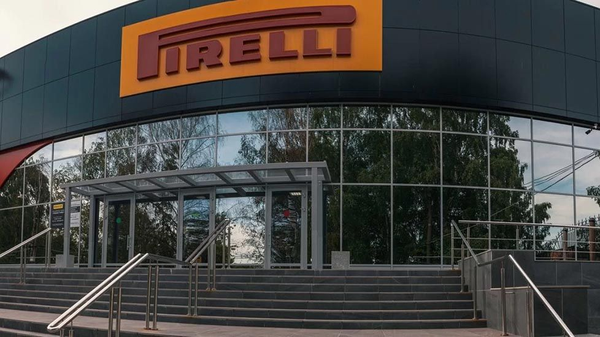
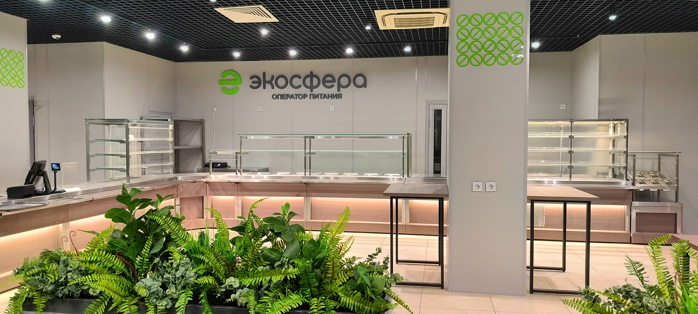
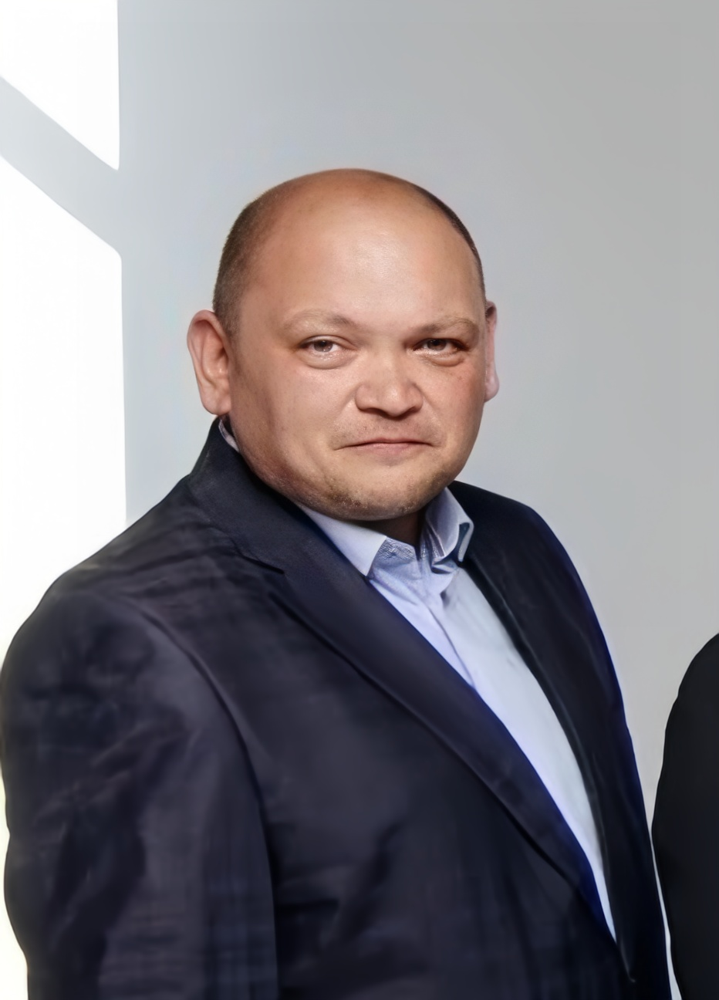
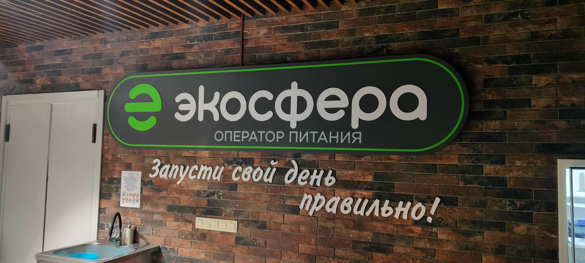
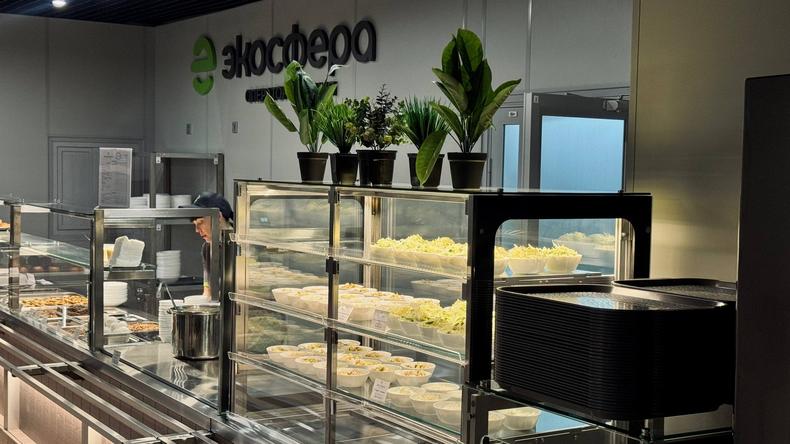
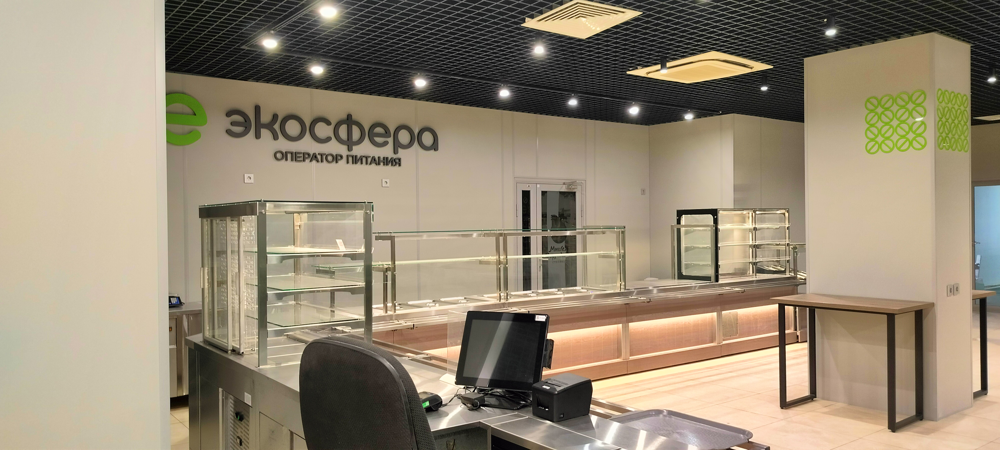
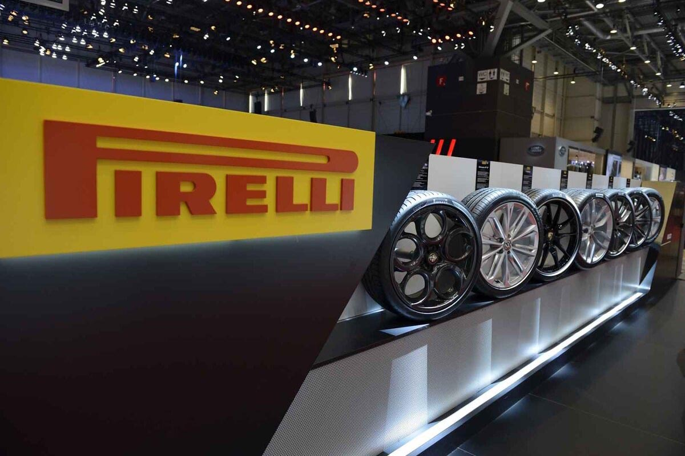

Стабильность
Учитываем графики смен, пиковые часы и реальную загрузку объектов.
Предложение для Pirelli
Федеральный оператор для промышленных предприятий. От запуска объекта и формирования команды до ежедневного контроля качества, поставок и развития сервиса.
Для Pirelli мы предлагаем не просто смену подрядчика, а стабильную с первого дня систему питания.


Опыт в регионах
01 / Почему «Экосфера»
Мы понимаем специфику промышленного питания и работаем там, где особенно важны бесперебойность поставок, скорость запуска и стабильность сервиса.
Учитываем графики смен, пиковые часы и реальную загрузку объектов.
Открытая отчётность, регулярные встречи и совместное планирование.
Анализируем обратную связь, охват питающихся и динамику удовлетворённости.
02 / Команда запуска
Каждый участник команды имеет опыт организации питания на промышленных, социальных и вахтовых объектах.

Руководитель проекта
В общественном питании с 1997 г. Открывал и управлял ресторанами и столовыми. Участвовал в организации питания на ЧМ-2018 в 11 городах.

Операционный директор
Многолетний опыт в сетевых проектах KFC. Возглавлял службу питания на заводе «КамАЗ»: 46 объектов и более 20 000 питающихся.

Руководитель производства
Более 27 лет на производстве. Возглавлял направление питания в Мордовском госуниверситете: 40 объектов, более 13 000 человек.

Руководитель отдела закупок
Опыт работы — почти 40 лет. Управляла более чем 50 объектами питания «Транснефти». В закупках и логистике — более 15 лет.
03 / План запуска
Меняем оператора, не нарушая привычный ритм предприятия. Каждый этап понятен, измерим и имеет конкретный результат.
Перед началом работы проводим полную диагностику предприятия, заранее определяем риски и готовим детальный план.
Графики смен, число питающихся, пиковые часы
Оборудование, техническое состояние, пропускная способность
Полный реестр, замены, закупки и сроки
Этап 02
Наша задача — сохранить непрерывность питания на каждом этапе перехода.

04 / Надёжное снабжение
Гибридная модель снабжения сочетает отработанную логистику и работу с местными производителями.
Что это даёт PirelliСвежие продукты, надёжные цепочки, снижение логистических затрат.
Архангельск · Северодвинск · Мурманск
Кировская область · Республика Коми
05 / Меню и сервис
Контролируем продажи, ассортимент и ротацию позиций, сохраняя баланс между разнообразием, качеством и экономической эффективностью.



06 / Контроль качества
Вопросы питания решаются в режиме реального времени, а качество оценивается не по ощущениям, а по данным.

07 / Стратегическое партнёрство
Наш успех измеряется качеством питания, уровнем удовлетворённости сотрудников и стабильностью всей системы.
Открытая отчётность, встречи и совместное планирование.
Учитываем процессы, графики смен и корпоративную культуру.
Стабильное питание, высокий сервис и минимизация рисков.
08 / Начнём диалог
Питанием, соответствующим высоким стандартам предприятия.
Обсудить проект